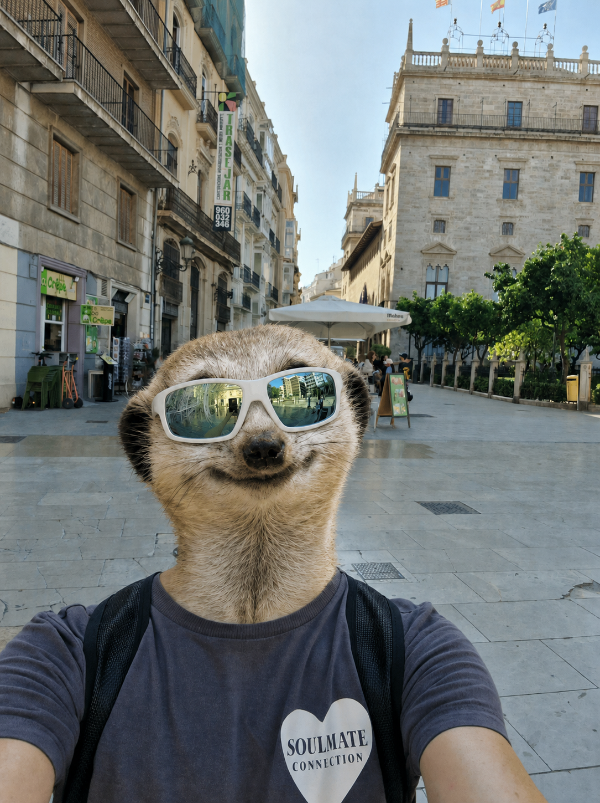
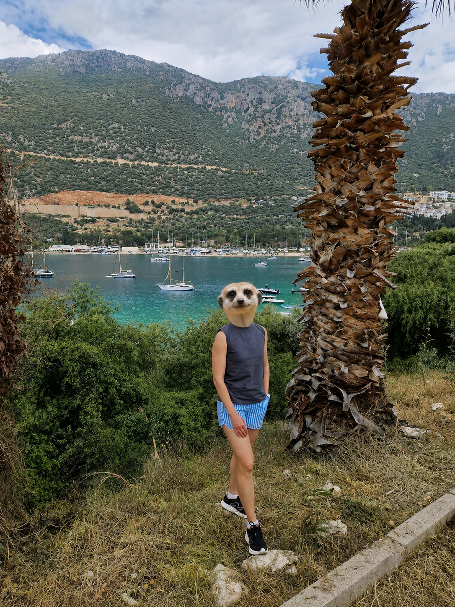
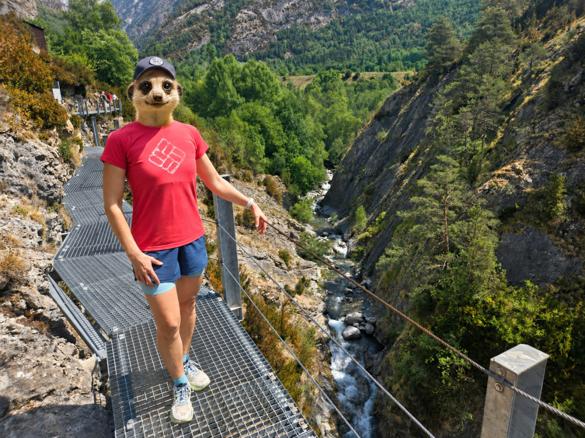

После одобрения
Испания. Послевизовое легкомыслие
После одобрения ВНЖ главное не забыть, что теперь все только начинается.
Читать статью Ola Española
Ola Española
Блог
Короткие разборы по ВНЖ цифрового кочевника в Испании, документам и практике подачи.

После одобрения
После одобрения ВНЖ главное не забыть, что теперь все только начинается.
Читать статью
Личный опыт
Честно о деньгах, жилье, налогах и выборе между Испанией и Турцией.
Читать статью
Переезд
Как не потратить несколько тысяч евро на отель, пока ждете решение по ВНЖ и карточку резидента.
Читать статью
Знакомство
Кому подходит этот ВНЖ, почему это не шенген и почему в основе подачи должны быть реальные документы.
Читать статьюСтатистика
Что известно о разрешениях, семьях, странах происхождения и популярных городах.
Читать статью